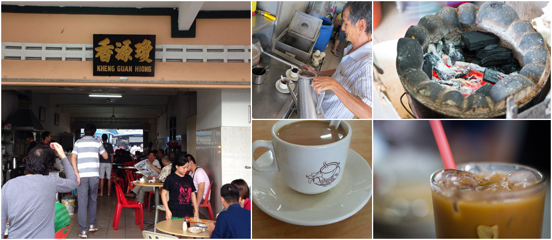

If you are a coffeeholic, step a foot at Kheng Guan Hiong where you can taste fragrant and coffee which you will definitely love! To make you coffee time in Pontian more delightful, partner it will toast. What a perfect combination!
Locations :No.15, Jalan Limau Kasturi, Taman Suraya,Pontian Town, 82000 Johor. Business Hours :Tues - Sun, 4:30AM to 4:00PM;Closed on Mondays 